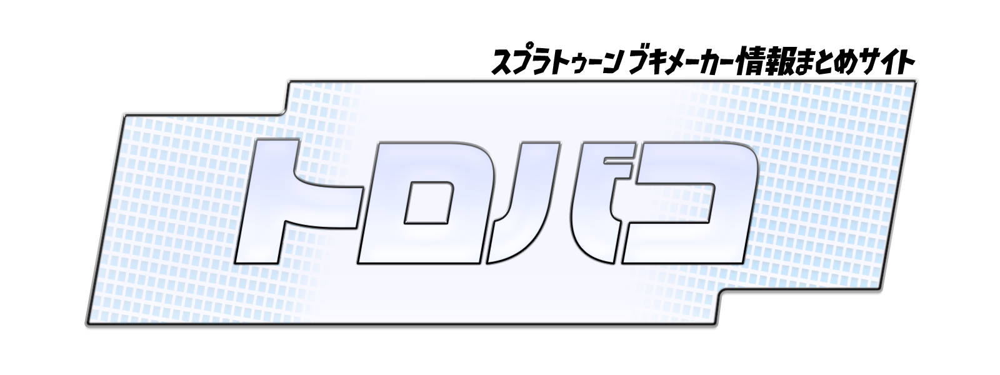

ブキメーカーとは？
『スプラトゥーン』に登場する服や靴などのギアには、それを手掛けたギアブランドが設定されていますが、ブキにも同じように、 そのブキを製造したメーカーが設定されています。これらの企業は、スプラトゥーンコミュニティ内で「ブキメーカー」と呼ばれ、 日夜、考察・研究が行われています。当サイトでは、そんな細かすぎる設定に関する公式情報・作中描写からの推察・管理人の妄想をそれぞれまとめています。
ブキメーカー一覧
メーカーの名前は、企業ロゴや活動内容から命名された非公式の仮称です。

『スプラトゥーン』に登場する服や靴などのギアには、それを手掛けたギアブランドが設定されていますが、ブキにも同じように、 そのブキを製造したメーカーが設定されています。これらの企業は、スプラトゥーンコミュニティ内で「ブキメーカー」と呼ばれ、 日夜、考察・研究が行われています。当サイトでは、そんな細かすぎる設定に関する公式情報・作中描写からの推察・管理人の妄想をそれぞれまとめています。
メーカーの名前は、企業ロゴや活動内容から命名された非公式の仮称です。